Other projects
More projects and coursework, beyond the ones on the projects page.
Adaptive Kalman Filtering for Market Microstructure Noise
Python · NumPy · SciPy · pandas · estimation theory
A Kalman filter that tracks the true price of Bitcoin and Ethereum through second-by-second noise, then tests whether the estimate is tradable.
Details
- Filter written from scratch, noise parameters fit by maximum likelihood on 45 million price updates. The adaptive version re-estimates noise as volatility shifts and fits unseen months far better.
- Backtested with realistic costs: the roughly 0.1 basis point edge did not clear the 0.5 bp cost floor, so the signal would not make money.
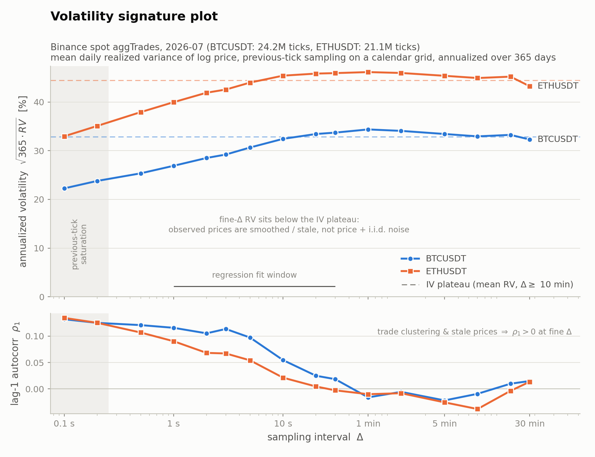
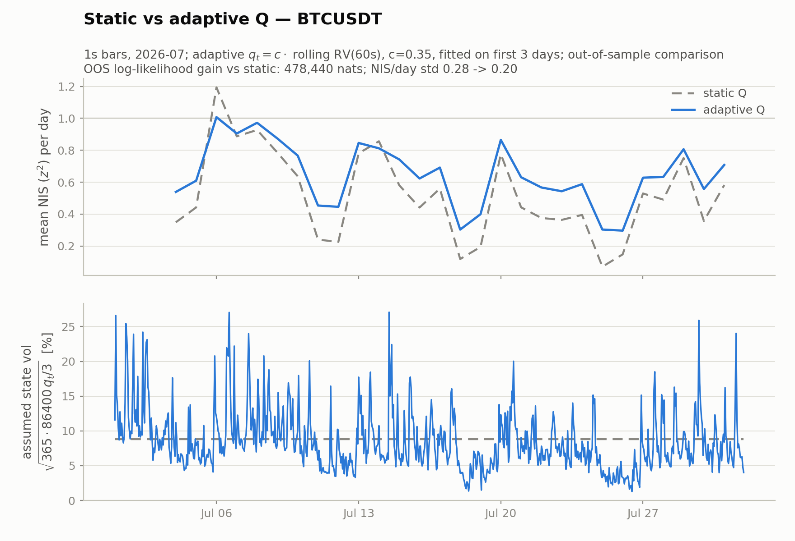
ECG Denoising at Negative SNR: LMMSE vs. Transformer
Student research at UC San Diego · Python · PyTorch · NumPy/SciPy · statistical signal processing
A classical statistical filter against a Transformer on heart signals buried in noise, compared on accuracy and on compute.
Details
- On MIT-BIH recordings at −8.5 dB the Transformer cut error 10.6 dB, 1.9 dB past the best causal linear filter, and that margin traced to nonlinearity rather than longer context.
- The linear filter costs 128 multiply-accumulates per sample against 34 million, roughly 265,000 times less compute, closed form and with readable coefficients.
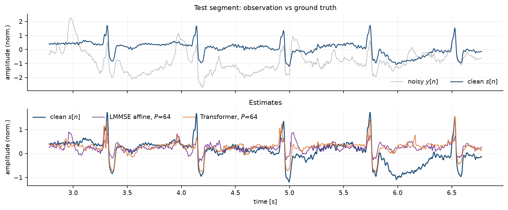
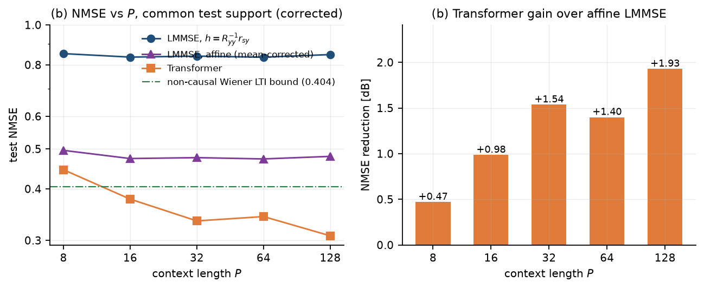
Real-Time Audio Spectrum Analyzer
C · STM32 ARM MCU · hardware design and validation · DSP
A microphone device that shows a sound's frequency content live, built end to end from the analog circuit to the firmware.
Details
- Single-supply 9 V front end (mic preamp, 5-pole anti-aliasing filter, ADC level shifting) feeding DMA-driven 12-bit acquisition at 10 kHz.
- Real-time CMSIS-DSP FFT on the chip's FPU. When the built circuit disagreed with SPICE, scoping it traced the fault to leaky electrolytic capacitors.
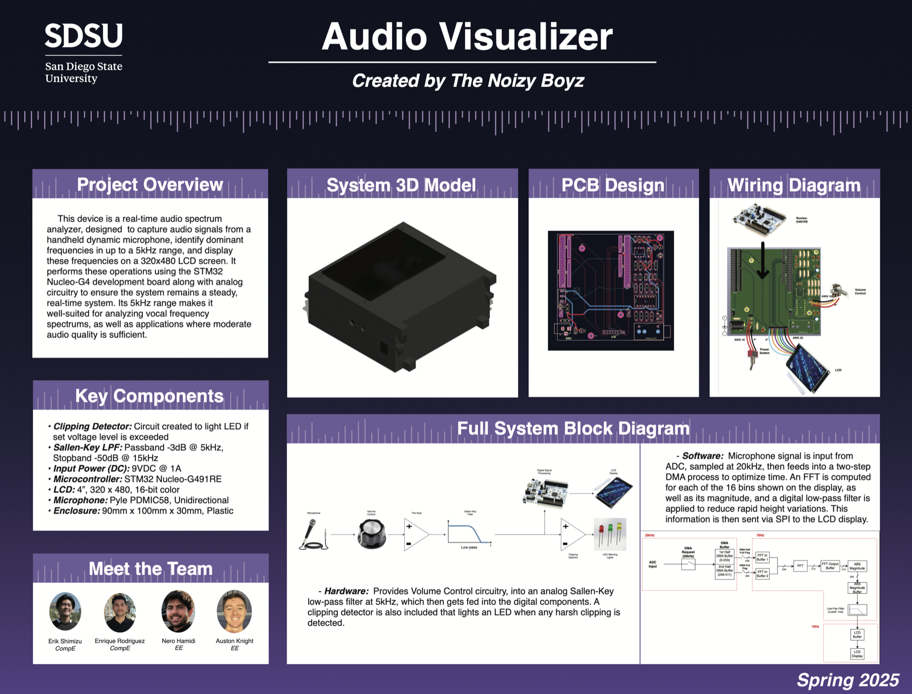
Real-Time Camera Metric Pipeline
C++17 · embedded Linux · multithreading · TCP sockets · Prometheus · Grafana
A C++ service that watches a Raspberry Pi camera around the clock and makes a degraded stream loud instead of silent.
Details
- A C++17 exporter polls two Linux media servers each second and serves rates from a
/metrics endpoint on raw TCP sockets, poll loop and socket server on separate threads behind a mutex.
- Grafana dashboards and alert rules on Raspberry Pi 5 and Arduino Uno hardware: a stalled stream shows up as a falling frame rate.
Demo video
This Site and Its Grounded LLM Chat Assistant
JavaScript · Gemini API · Cloudflare Workers
This site, plus its chatbot. The work was grounding the model and keeping the API key out of the browser.
Details
- Browser chat UI holding multi-turn history, grounded on a curated profile so the model says it doesn't know instead of inventing an answer.
- API key moved off the client into a Cloudflare Worker proxy gated by an origin allowlist, after a build-time secret still reached users.
- Plain HTML on GitHub Pages. The signal playground and Signal Share are vanilla JavaScript, no framework.
Communication and DSP Lab
MATLAB · lab instrumentation · analog and digital communications
Bench and MATLAB labs building the core pieces of radio and audio communication systems.
Details
- A delta-modulation audio codec in MATLAB, and the Nyquist limit shown on hardware by sweeping frequency until aliasing appeared.
- Two analog FM demodulators (phase-locked-loop and zero-crossing) plus a digital I/Q version with an arctangent discriminator.
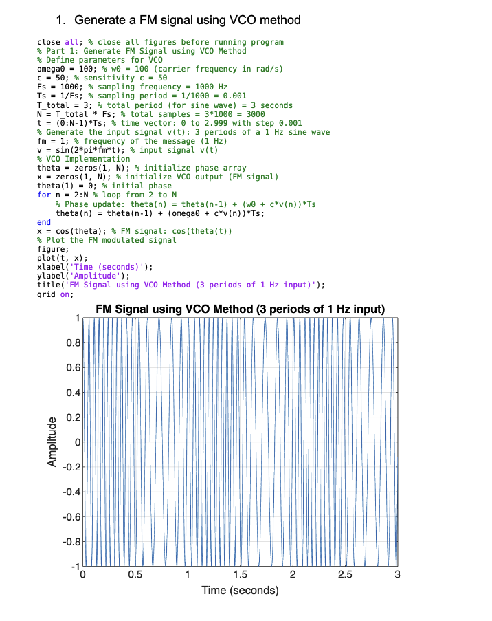
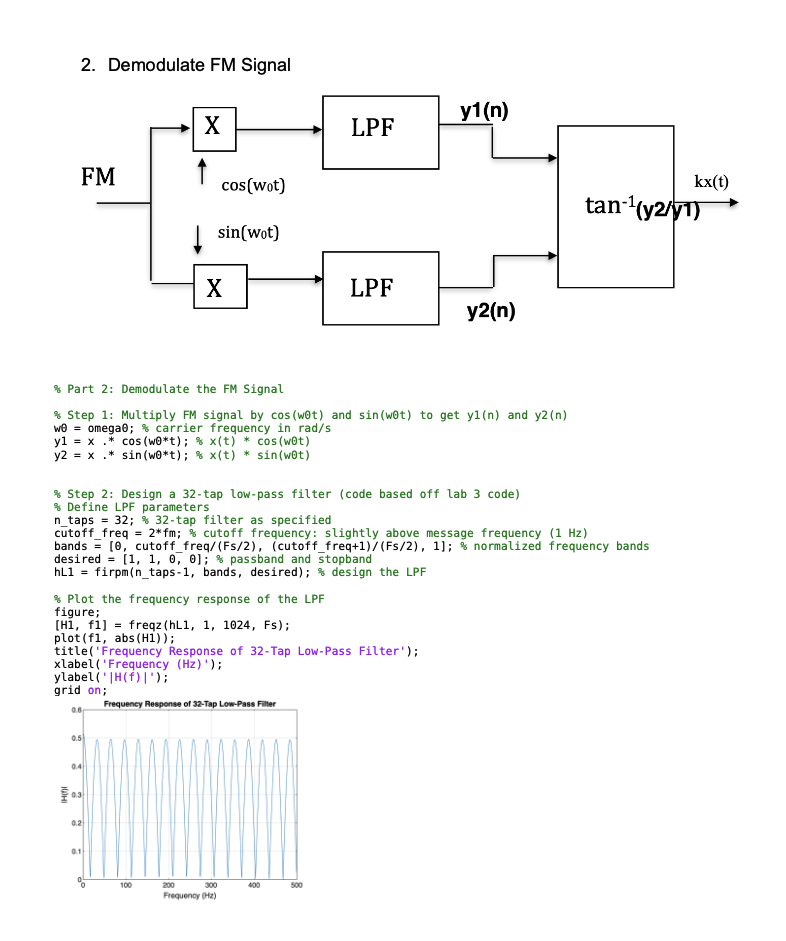
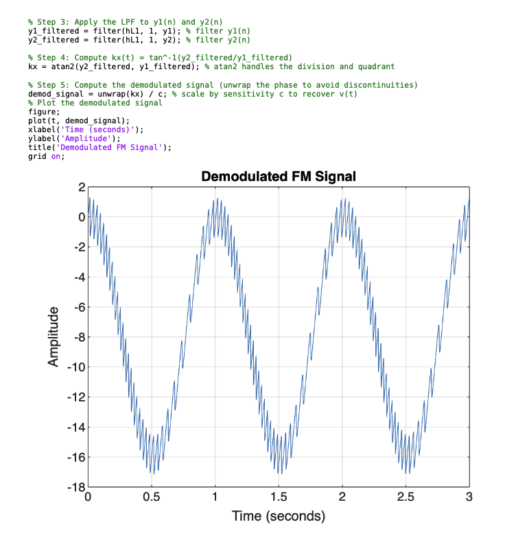
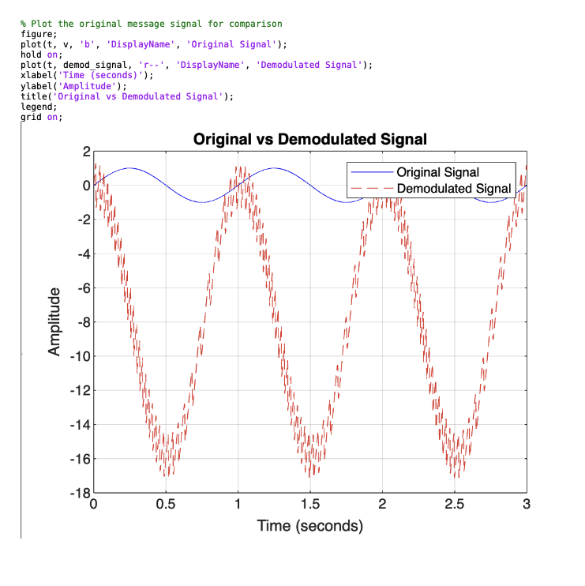
Digital Clock on FPGA
Verilog · Basys 3 FPGA
An alarm clock built as digital logic in Verilog rather than software, running on an FPGA.
Details
- Counters for the time base, a time-multiplexed 7-segment driver, and comparator logic for the alarm.
- Synthesized and verified on a Basys 3 board.
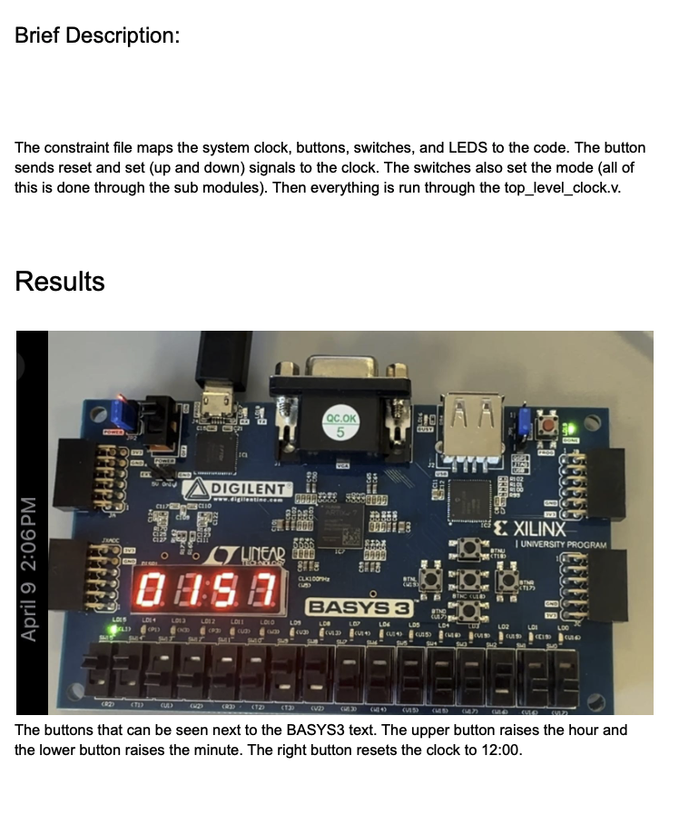
Full Adder IC Design in Pseudo-NMOS Logic
Cadence Virtuoso
A 1-bit adder designed at the transistor level: schematics, physical layout, and simulation.
Details
- AND, OR, and XOR gates in pseudo-NMOS logic, every layout clean through DRC and LVS.
- 0.96 ns carry and 0.60 ns sum propagation delay driving 50 fF loads at 5 V.
Digital Integrated Circuit Design
Cadence Virtuoso · Spectre · Verilog · 45 nm CMOS PDK
Coursework designing digital circuits on a 45-nanometer process, from transistor sizing to physical layout.
Details
- Inverter sizing, ring oscillator characterization across supply voltage, and logical-effort gate optimization, simulated in Spectre.
- Standard-cell layout in Virtuoso through DRC, LVS, and post-layout extraction.
OCR Model Robustness Evaluation
Python · MATLAB · PyTorch · DSP
How much a wet or hazy lens hurts AI text recognition, and whether image restoration wins any of it back.
Details
- Paired 100-image dataset, the same scenes clean and through a water droplet: TrOCR and PARSeq read accuracy fell from 0.93 to 0.63.
- Dehazing and Wiener super-resolution recovered none of it, because droplet blur is not linear motion blur and an indoor scene has no haze.
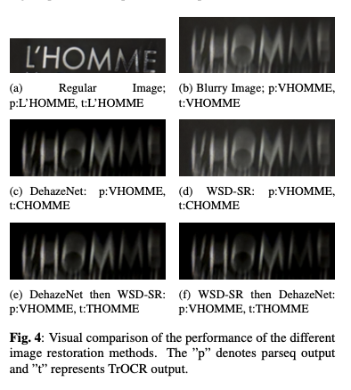
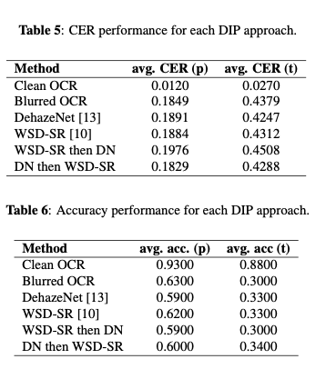
Machine Learning Projects
Python · NumPy · PyTorch · HuggingFace · pandas · scikit-learn
Core machine-learning algorithms written by hand in NumPy, plus applied work in PyTorch and HuggingFace.
Details
- LASSO via ISTA on a 1,279-feature genetics dataset, plus PCA, K-means, and a two-layer network with hand-coded backpropagation, all in plain NumPy.
- In PyTorch: a CNN on 60K MNIST images, an LSTM over 18 language classes, and a CBOW embedding model.
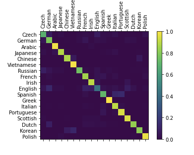
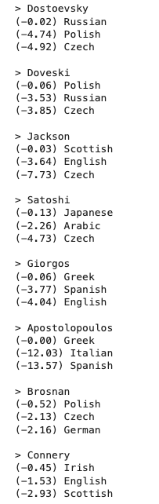
Other coursework
- Signal processing
- Digital Signal Processing · Digital Image Processing · Signals & Systems · Analog & Pulse Communication Systems and Lab
- Machine learning
- Machine Learning · EE Statistics · Computational Evolutionary Biology
- Hardware
- VLSI Circuit Design · Digital Circuits and Lab · Analysis & Design of Electronic Circuits · Embedded Systems Programming
- Software
- Data Structures · Advanced Programming Languages · 3D Game Programming